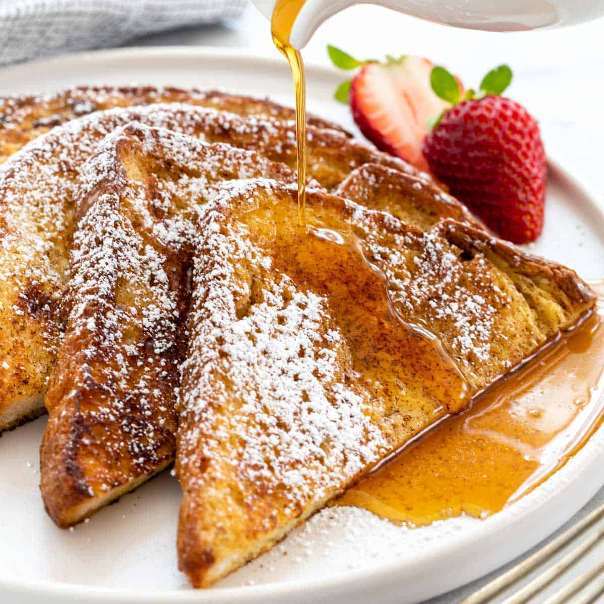

French Toast

Description
French Toast has always been a comfort food in my home since a child. Taking the time to get to learn how to
make this simple
recipe really adds a bit of weekly nostalgia in my life.
Ingredients
- ¼ cup all-purpose flour
- 1 cup milk
- 3 eggs
- 1 tablespoon white sugar
- 1 teaspoon vanilla extract
- 1/2 teaspoon ground cinnamon
- 1 pinch salt
- 12 thick slices of bread
Steps
- Measure flour into a large mixing bowl. Slowly whisk in milk. Whisk in eggs, sugar, vanilla extract,
cinnamon, and salt until smooth.
- Heat a lightly oiled griddle or frying pan over medium heat.
- Soak bread slices in milk mixture until saturated.
- Working in batches, cook bread on the preheated griddle or pan until golden brown on each side. Serve
hot.